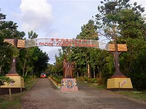
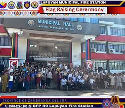
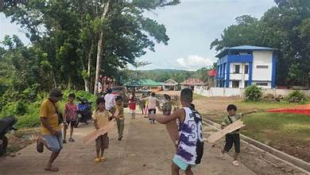
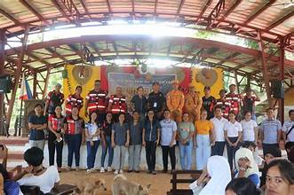
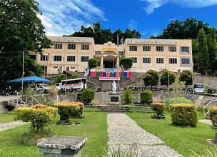

The barangay is the smallest administrative unit in the Philippines, and Zamboanga del Sur has over 700 barangays spread across its municipalities and the city. Each barangay is a self-governing community responsible for delivering grassroots services.
Each barangay is led by a Punong Barangay (barangay captain) elected by residents. The barangay council, known as the Sangguniang Barangay, consists of seven elected councilors who assist in legislative functions at the local level.
The Sangguniang Kabataan (SK) represents the youth sector in each barangay. The SK chairperson and council are elected by young residents and are responsible for programs addressing youth welfare, education, and livelihood.
Barangay governments maintain peace and order, mediate local disputes through the Lupong Tagapamayapa, deliver basic health and social services, and manage community development projects funded through their share of government allocations.
Barangays coordinate with their parent municipalities and the provincial government for larger projects, disaster response, and infrastructure needs. The provincial government provides technical assistance and oversight.
Barangays are the heart of social and cultural life in the province. Community gatherings, fiestas, and local events are organized at the barangay level, strengthening community bonds and preserving local traditions.
Hover to fan · Hover a photo to pick

